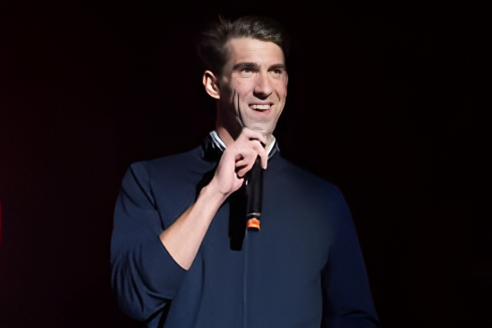

Achievements

Michael Phelps is known for his overwhelming accomplishments in the world of competitive swimming. He is the most decorated Olympian of all time, with a total of 28 medals, having set numerous world records, 4 of which stand currently. Having represented Team U.S.A. at 4 different Olympics, Michael Phelps has been an inspiration to a generation of future and current athletes.
Michael Phelps has earned the most olympic medals of all time, and also still holds 2 world records in competitive swimming. He stands at the top of all olympic athletes, having 10 more medals than the next highest, Larisa Latynina.
| Gold | Silver | Bronze |
|---|---|---|
| 28 | 3 | 2 |
| 4 x 100m Freestyle relay | 4 x 200m Freestyle relay |
|---|---|
| Time 3:08.24 (Beijing, China) | Time 6:58.55 (Rome, Italy) |
For more information, you can click here.
Since retiring from competing, Michael Phelps has opened up more on his struggles with mental health. He has become a spokesperson for mental health, starting the Open Up program, through the Michael Phelps Foundation. He also enjoys spending his free time with his family, wife Nicole Johnson and their 4 children. To learn more about the Open Up program, please click on the picture below.
